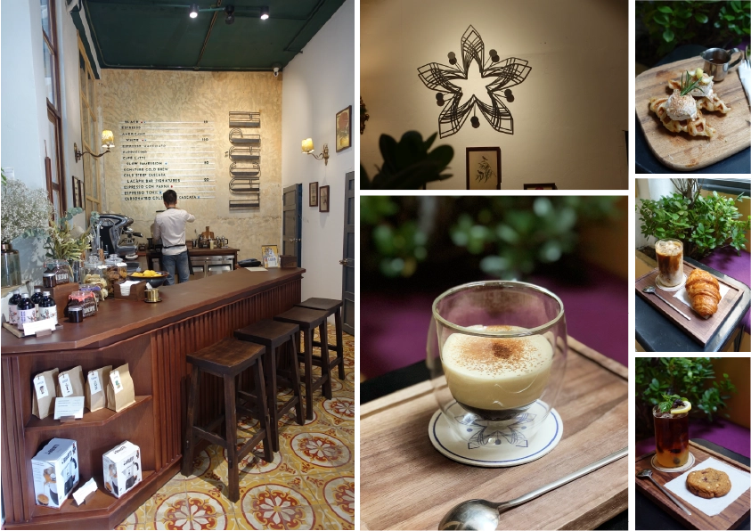

LACÀPH BAR
Lacàph Bar có thực đơn phong phú hơn Lacàph Space,
là nơi để bạn thưởng thức tất cả các sản phẩm của Lacàph từ cà phê,
trà đến các sản phẩm
đóng chai tiện lợi.
Đây cũng nơi bạn có thể thưởng thức cà phê từ các sản phẩm cà phê hạt rang phiên bản giới hạn.
Các loại nước uống tại Lacàph Bar được pha chế từ Signature Filter Blend,
Espresso Blend, Phin Blend và 2 sản
phẩm đóng chai Cà phê ngâm lạnh và Trà Vỏ quả Cà phê ngâm lạnh.
Đến Lacàph Bar, bạn có thể uống nhanh
một tách espresso,
hoặc nán lại lâu hơn để thưởng thức một ly macchiato đá hay một ly trà cascara ủ lạnh
sảng khoái và tươi mát.

Thời gian hoạt động của Lacàph Bar
Hằng ngày từ 9:00–17:00